第6章 计算机网络
网络的定义
计算机网络就是利用通信线路和设备，把分布在不同地理位置上的多台计算机连接起来，在功能完善的网络软件（网络协议、网络操作系统等）的支持下，实现计算机之间 数据通信和资源共享 的系统。
计算机网络是 计算机技术与通信技术相结合的产物。
网络中计算机与计算机之间的通信依靠协议进行。协议是计算机收、发数据的规则。主要包括：
- IP 协议
- TCP 协议
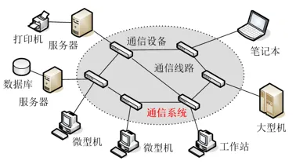
计算机网络的发展
面向终端的第一代计算机网络
以单个主机为中心的远程联机系统，实现了地理位置分散的大量终端与主机之间的连接和通信。
各终端通过通信线路共享昂贵的中心主机的硬件和软件资源。
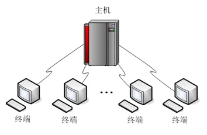
以分组交换网为中心的第二代计算机网络
以分组交换网络为中心，主机都处在网络的外围。
用户通过分组交换网，可共享连接在网络上的许多硬件和各种丰富的软件资源。
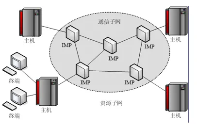
以网络互联为核心的第三代计算机网络
通常将网络之间的连接称为 网络互连。
最常见的网络互连方式，就是通过 路由器 等互联设备将不同的网络连接到一起，形成可以互相访问的“互联网”。
著名的 Internet 就是目前世界上最大的一个国际互联网。
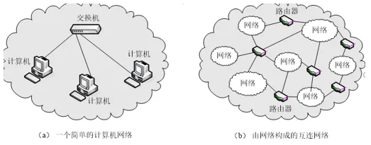
网络的主要功能
计算机网络的主要功能包括：
- 通信功能
- 资源共享
- 提高系统性能，主要是可靠性和可用性
- 实现数据的传输和集中管理
- 均衡负载，即分布式控制和分担负荷，提高计算机的处理能力
网络的分类
按照网络的地理范围，可分为：
- 局域网（LAN）
- 城域网（MAN）
- 广域网（WAN）
局域网（Local Area Network）
局域网是指地理范围在几米到十几公里内的计算机及外围设备通过高速通信线路相连的专用网络。
一个学校或企业通常会拥有许多个互连的局域网，这类网络常称为：
- 校园网
- 企业网
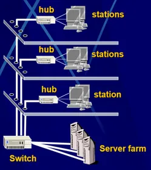
局域网的特点
- 传输距离有限：一般在几米到十几公里范围
- 传输速率高：一般在
10 Mbps ～ 10 Gbps - 传输可靠性高：误码率通常在
10^-7 ～ 10^-12 - 结构简单
- 协议简单
- 容易实现
- 灵活性较好
误码率是指每传送 n 个位，可能发生一个位的传输差错。
城域网（Metropolitan Area Network）
城域网是在一个城市范围内建立的计算机通信网。
城域网通常使用与局域网相似的技术，传输媒体主要采用 光缆。
教材指出，城域网技术并没有在世界各国迅速推广，而在实际中被广域网技术所取代。
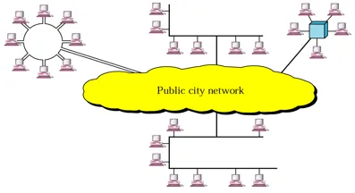
广域网（Wide Area Network）
广域网一般是在不同城市和不同国家之间，将 LAN 或 MAN 网络进行互联。
其地理范围通常为：
几十公里 ～ 几千公里
通信传输装置和媒体一般由电信部门提供。
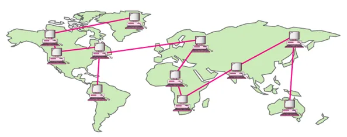
广域网的特点
- 覆盖范围大：通信距离通常为几十公里到几千公里
- 传输速率较低，传输误码率较高
- 通信子网通常由电信部门负责建设，或借用现成的公共通信网络
- 结构复杂
- 协议复杂
- 投资大
- 实现周期长
教材同时指出，随着光纤标准和全球光纤通信网络的发展，广域网的速度和可靠性也会提高。
网络拓扑结构
计算机网络的 物理拓扑结构，用于描述计算机网络中通信子网的终点与通信线路之间的几何关系。
它会影响：
- 网络性能
- 网络协议的实现
- 网络可靠性
- 网络通信成本
教材主要介绍以下几种结构：
- 星形
- 总线形
- 环形
- 树形
- 网状形
星形拓扑
星形拓扑存在一个 中心节点。
每个节点通过点到点链路与中心节点连接，所有通信都通过中心节点进行。
交换局域网是一种典型的星形拓扑结构。
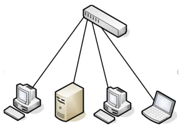
优点
- 结构简单
- 组网容易
- 控制相对简单
- 故障影响小
- 容易检测和排除故障
缺点
- 电缆数量大
- 安装工作量大
- 通信线路利用率低
- 中心节点是全网可靠性的瓶颈
- 中心节点出现故障时，整个网络通信会瘫痪
应用
星形拓扑在 以太网 中得到非常广泛的应用。
总线形拓扑
所有节点都连接到一条作为公共传输媒体的总线上，信息以 广播方式 进行传输。
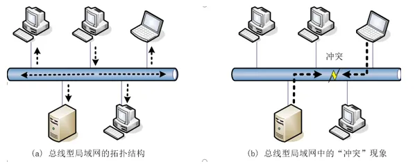
优点
- 布线简单
- 节点增删容易
- 成本较低
缺点
- 节点发送信息时要竞用总线，容易引起冲突
- 节点过多会降低网络速度
- 故障影响大
- 故障难以检测和排除
应用
早期用于以太网，目前已经较少采用。
环形拓扑
环形拓扑以共享媒体方式进行数据传输。
每个节点都与两个相邻节点相连，节点之间采用点到点链路，网络中所有节点构成一个闭合的环。
环中的数据沿一个方向绕环逐站传输。
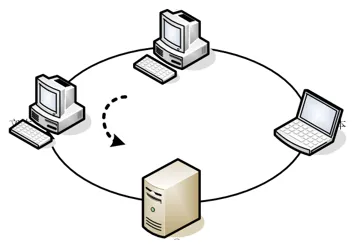
优点
- 结构简单
- 实时性强
缺点
- 增删节点操作复杂
- 增删节点会干扰整个网络正常运行
- 故障影响大
- 故障难以检测和排除
应用
早期的令牌环网和 FDDI 采用环形结构。
教材指出，目前环形拓扑由于其单向传输的特点，主要应用于光纤网中。
树形拓扑
树形拓扑可以看作是 星形拓扑的扩展。
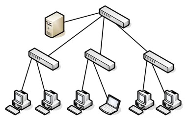
优点
- 可扩展性好
缺点
- 各个节点对根节点的依赖性太大
应用
教材指出，树形拓扑在以太网中得到了非常广泛的应用。
网状形拓扑
网状形拓扑中，节点之间的连接是任意的，没有规律。
一种特殊的网状结构是 全连接：
任意两个节点之间都有连接。
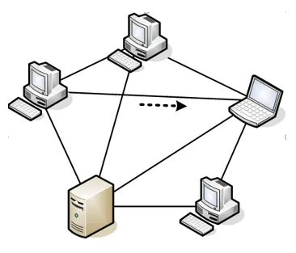
优点
- 系统可靠性高
- 系统不容易受瓶颈问题和失效问题影响
缺点
- 结构复杂
- 成本高
- 网络协议复杂
应用
主要用于军方或其他特殊用途，一般应用中较少使用。
网络协议
网络协议（Network Protocol），简称 协议，是为进行网络中的数据交换而建立的规则、标准或约定的集合。
协议主要由三个要素组成：
| 要素 | 含义 |
|---|---|
| 语法 | 通信双方交换数据和控制信息的格式 |
| 语义 | 每部分控制信息和数据所代表的含义 |
| 同步 | 事件实现顺序的详细说明 |
例如：
- 通信如何发起
- 收到一个数据后，下一步要做什么
人类协议和网络协议
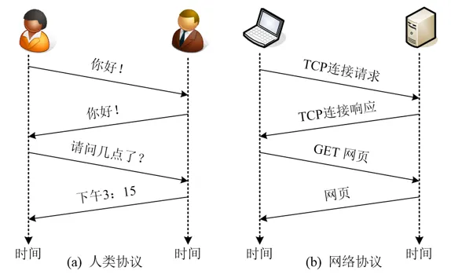
教材通过人类交流过程与网络通信过程进行类比：
- 人类交流需要约定
- 网络通信同样需要协议
这说明网络通信中的数据交换必须遵循双方都认可的规则。
协议分层设计
概念上可以认为通信是 水平的，但实际上水平通信依赖 垂直通信 来实现。
网络协议被分解成若干相互有联系的简单协议，这些简单协议的集合称为 协议栈。
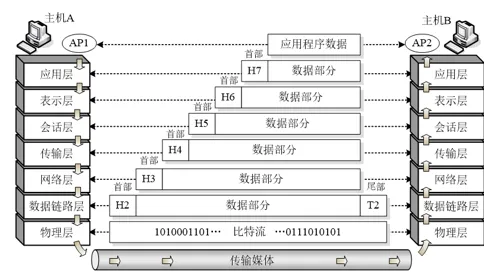
教材使用“信件的寄送过程”来类比分层通信过程。
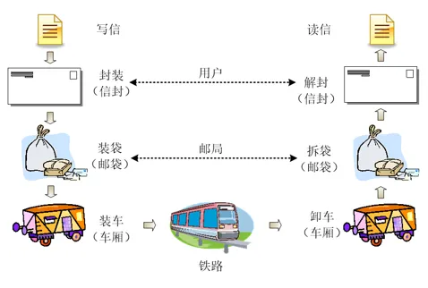
网络体系结构
网络体系结构（architecture）是：
计算机网络的各层及其协议的集合。
也就是这个计算机网络及其部件所应完成的功能的精确定义。
教材列举两个典型例子：
- ISO/OSI 参考模型
- TCP/IP 体系结构
ISO/OSI 参考模型
OSI 参考模型，即 开放系统互联参考模型，由 ISO 组织提出，目的是实现异种机互连。
其中：
- “开放”表示任何两个遵守 OSI 标准的系统可以互连
- “系统”指计算机、终端或外部设备等
教材指出，OSI 参考模型相关协议已经很少使用，但该模型本身仍然非常通用，在每一层上讨论到的特性仍然非常重要。
TCP/IP 体系结构
TCP/IP 体系结构是 Internet 使用的体系结构，目的是用于网络互连，是事实上的工业标准。
教材称：
- ISO/OSI 参考模型可看作“法律上的国际标准”
- TCP/IP 是事实上的工业标准
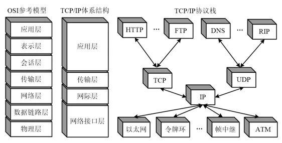
TCP/IP 体系结构中最重要的两个协议是：
- TCP
- IP
IP 地址
IP 地址可以理解为每台计算机的一个“身份证”。
教材指出，这个“身份证”是可变的：
- 重启计算机后可能变化
- 将计算机移动到其他地区后也可能动态变化
计算机还有一个理论上不变的地址，即 MAC 地址。
MAC 地址
教材指出：
- MAC 地址一般由计算机厂商在生产时烧录在网卡 EPROM 上
- 理论上是独一无二的
- 但硬件地址可以人为修改
- MAC 地址位于 数据链路层
IP 地址
IP 位于 网络层。
教材以 IPv4 地址为例：
192.168.1.2
IPv4：
- 共 32 位
- 采用点分十进制形式
- 每 8 位一组，共 4 组
- 每组取值范围为
0～255
IPv4 地址总数为：
4294967296
大约 43 亿个。
为了弥补 IPv4 地址数量不足的问题，引入 IPv6。
IPv6：
128 位
随堂检测
1. 广域网的英文缩写是（ ）。
- A. LAN
- B. WAN
- C. MAN
- D. LNA
查看答案
答案：B
2. 以下不属于无线通信技术的是（ ）。
- A. 蓝牙
- B. WiFi
- C. GPRS
- D. 以太网
查看答案
答案：D
3. 下列选项是正确的 IP 地址的有（ ）。
- A.
202.300.12.4 - B.
192.168.0.3 - C.
100:128:35:91 - D.
111-120-35-21
查看答案
答案：B
4. 下列几个 32 位 IP 地址中，书写错误的是（ ）。
- A.
162.105.142.27 - B.
192.168.0.1 - C.
256.256.129.1 - D.
10.0.0.1
查看答案
答案：C
5. IPv4 协议使用 32 位地址，随着其不断被分配，地址资源日趋枯竭。因此，它正逐渐被使用（ ）位地址的 IPv6 协议所取代。
- A. 40
- B. 48
- C. 64
- D. 128
查看答案
答案：D
6. 关于互联网，下面的说法哪一个是正确的（ ）。
- A. 新一代互联网使用的 IPv6 标准是 IPv5 标准的升级与补充
- B. 互联网的入网主机如果有了域名就不再需要 IP 地址
- C. 互联网的基础协议为 TCP/IP 协议
- D. 互联网上所有可下载的软件及数据资源都是可以合法免费使用的
查看答案
答案：C